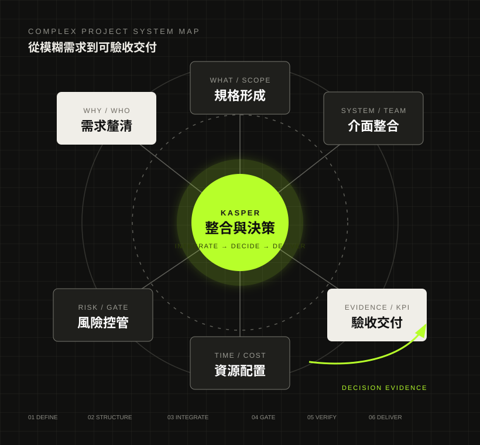
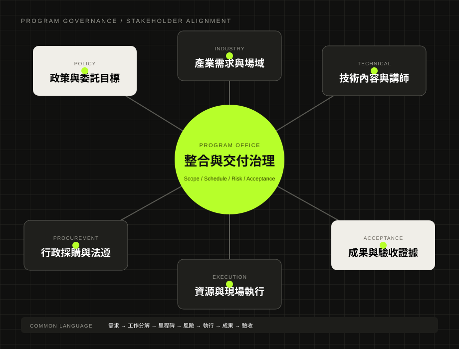
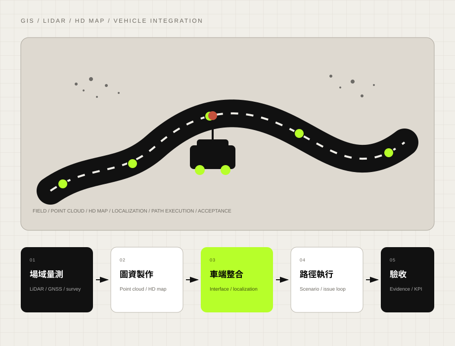
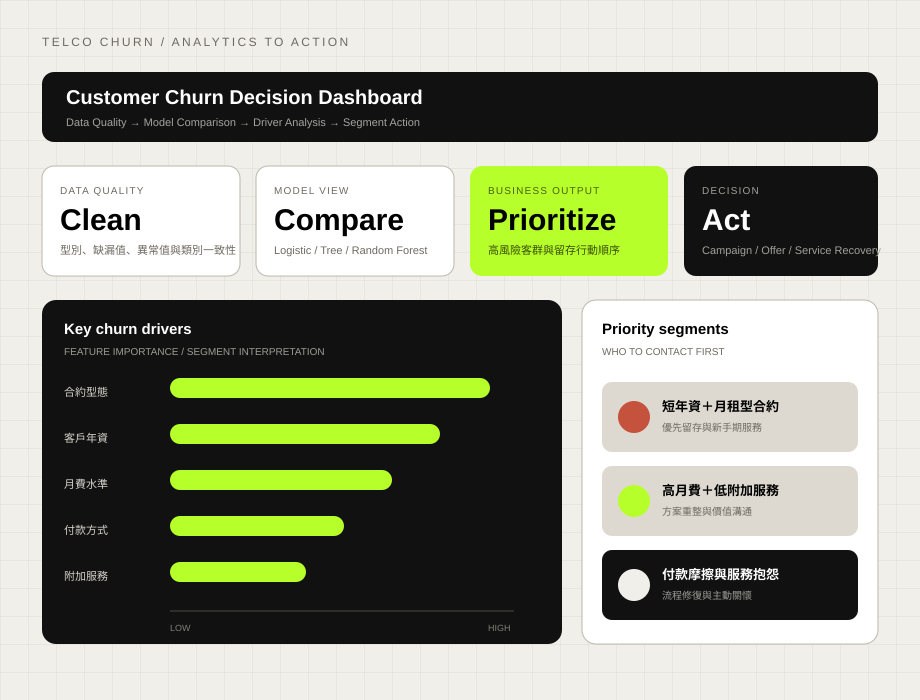
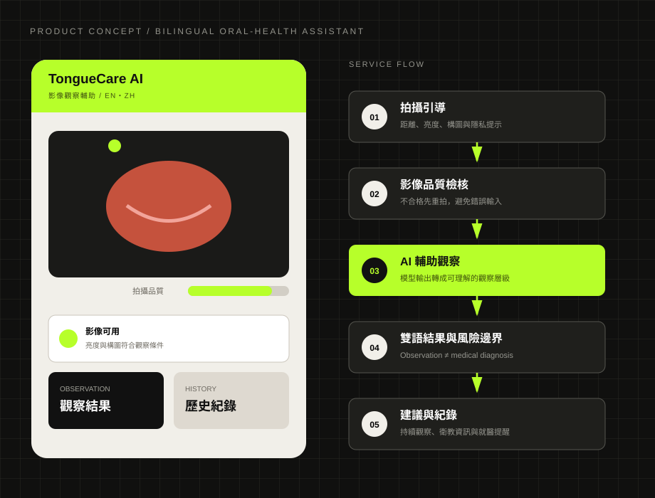
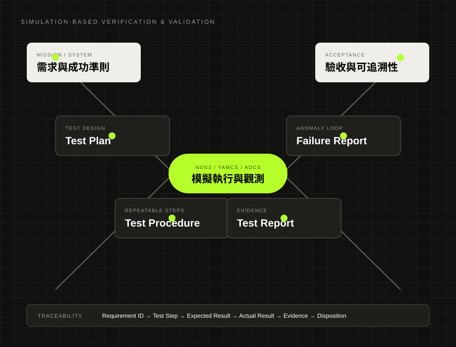
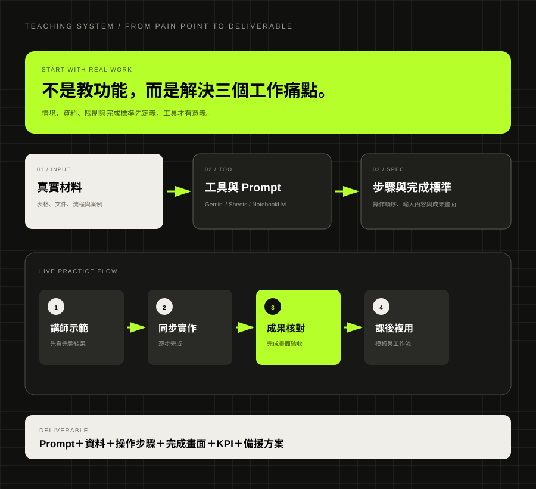

SENIOR PROJECT MANAGEMENT / AI ADOPTION / DIGITAL TRANSFORMATION / SYSTEM INTEGRATION
把複雜需求，
轉成可驗收成果。
18 年以上科技專案、產品導入與系統整合經驗。從需求訪談、PoC、規格、WBS、供應商與風險管理，到 SIT／UAT、V&V 與成果驗收，核心工作始終是把技術、資料、流程與利害關係人整合成可交付系統。
18+年科技專案、產品與系統整合
2,500萬智慧城市高精圖資示範案規模
20%AMR 場域驗證與現場測試時程縮短

需求、規格、介面、資源、風險與驗收不是分開管理，而是同一套交付系統。AI 應用導入數位轉型系統整合政府專案太空產業資料決策
01
POSITIONING
我不是只追蹤進度的 PM。
真正的價值，是先把「完成」定義清楚。
面對需求不完整、技術成熟度不一、跨部門立場不同或政府履約限制明確的專案，我先釐清使用情境、限制條件、系統介面、責任分工與驗收基準，再以 WBS、里程碑、風險／議題／變更控管、委外協作與成果文件化推進交付。
需求工程規格形成專案治理供應商管理測試驗證成果驗收
PROFESSIONAL IMPACT
先看真正能證明能力的成果。
正式職涯成果與研究實作分開呈現，避免把不同成熟度的經驗混在一起。
01政府／企業科技委託案 2022–2025
千萬級 AI／低軌衛星與前瞻科技專案履約
主責 AI 應用、低軌衛星、地面站通訊、衛星影像與系統整合等跨域委託案，將技術需求轉成可追蹤、可驗收的交付成果。
- 角色
- 專案經理；負責提案、需求分析、WBS、預算與資源配置、委外管理、里程碑、風險、品質、成果交付與驗收。
- 挑戰
- 技術、行政程序、契約要求、供應商與成果驗收同時存在，需建立跨單位共同作業標準。
- 成果
- 完成多項千萬級政府與企業委託案之階段成果、里程碑及成果驗收。
- 能力證據
- 政府專案管理、AI 專案管理、低軌衛星、WBS、委外管理、風險管理、成果驗收。

政策／契約、技術、供應商、時程、品質與驗收需要同時被管理。把產業人才需求、師資、企業資源、委外執行與政府成果要求整合成可交付計畫。02經濟部太空產業供應鏈發展計畫
太空產業人才培育與產業鏈結（Space Industry Talent Development）
規劃產業領袖營、在職人才技術工作坊、成果交流與人才媒合，將系統工程、衛星通訊、地面站與設備量測等需求轉成實際培育內容。
- 111 年成果
- 太空產業領袖營吸引超過 40 家臺灣企業參與。
- 112 年成果
- 完成 5 大主題、10 位專業師資、42 小時課程，共 29 家企業、152 位在職員工參訓。
- 我的工作
- 產業需求盤點、培育架構、師資與企業資源整合、委外管理、時程控管、活動執行與成果彙整。
- 能力證據
- Program Management、產業鏈結、跨組織協作、利害關係人與委外管理。
03經緯航太 2019–2022
智慧地面載具／AMR／ROS 與 AI 系統整合
擔任建東精工 × 經緯航太智慧地面載具共同開發案 PM，整合機構、電控、感測器、AI 演算法、軟體與場域需求。
- 我的工作
- 管理跨公司需求、技術介面、時程、變更與 Issue Tracking；將巡航動線、安全條件與作業流程轉成系統規格與測試條件。
- 量化成果
- 透過變更控管與問題追蹤，使場域驗證與現場測試時程縮短約 20%。
- 延伸經驗
- AMR、智慧農業、智慧無人載具、ROS-based 場域驗證；所屬團隊獲「表現優異」證明。
- 能力證據
- AMR、ROS、自駕載具、AI 視覺、系統整合、變更管理、測試驗證。

從場域、感測、定位、控制到驗收，關鍵在跨介面協作，而非單一模組完成。
把營運資料轉成配貨、庫存與供貨決策機制。04台灣之星 2016–2018
電信門市數位轉型與通路流程自動化
盤點申辦、續約、遠端視訊客服、通路管理與配貨流程，整合營運、資訊、倉儲及門市，建立多通路自動配發模型。
- 量化成果
- 庫存週轉達成率提升至 85–90%，約 80% 訂單於 12 小時內完成供貨。
- 外部肯定
- 相關大數據與自動化通路管理成果於任職期間獲 ECI Awards（艾奇獎）及金炬獎等公司級外部肯定。
- 我的工作
- 營運數據分析、需求盤點、流程設計、系統導入測試、問題追蹤與跨部門協作。
- 能力證據
- 數位轉型、流程自動化、營運數據、配貨模型、系統導入。
05智慧城鄉高精圖資示範案 2018–2019
智慧城市高精圖資與 LiDAR（HD Map & LiDAR）
於約新臺幣 2,500 萬元示範案中，負責場域需求、成果規格、分包商協調、點雲／圖資成果管理與品質驗證。
- 場域
- 台中水湳、台南沙崙等示範場域。
- 我的工作
- 場勘、需求彙整、高精圖資精度與 LiDAR 點雲交付標準、分包商協調、品質檢核與管理儀表板。
- 成果
- 提高成果品質、交付進度與問題狀態的可追蹤性。
- 能力證據
- GIS、LiDAR、高精圖資、智慧城市、自駕載具、品質管理、成果驗收。
85–90%電信庫存週轉達成率
80%訂單於 12 小時內完成供貨
152位太空產業在職員工參訓
40+家臺灣企業參與太空產業領袖營
CAREER ARCHITECTURE
18 年跨產業，
累積的是同一套整合能力。
從資訊產品與通路專案起步，歷經 GIS／監控／智慧交通、OEM／ODM 工業顯示、電信數位轉型、高精圖資與 LiDAR、AMR／ROS 與 AI 視覺、低軌衛星與生成式 AI。技術領域持續變化，但工作主軸一直是需求、介面、資源、風險與驗收。
2008 資訊產品／O2O2011 GIS／智慧交通2014 OEM／ODM2016 電信數位轉型2018 高精圖資／LiDAR2019 AMR／ROS2022 太空／低軌衛星2025 生成式 AI
01需求工程與規格
需求訪談、優先排序、功能／系統規格、介面、測試重點與驗收條件。
02專案治理與履約
WBS、預算、里程碑、風險／議題／變更、委外與成果驗收。
03系統整合與場域
軟硬體、資料、通訊、供應商、場域與使用單位的跨介面整合。
04資料與決策支援
統計、營運資料、KPI、模型評估與情境分析轉化為決策依據。
RESEARCH & ENGINEERING PRACTICE
研究與工程實作，補強技術判讀。
這一區專門呈現研究、課程與原型實作，不與正式企業履約成果混在一起。
R01DATA ANALYTICS
電信客戶流失預測（Telco Churn Prediction）
以 7,043 筆公開資料完成模型比較，Logistic Regression ROC-AUC 0.842，關鍵因子包含在網月數、合約型態與網路服務類型。
PythonLogistic RegressionROC-AUC 0.842模型解釋

R02RESPONSIBLE AI / PRODUCT
AI 舌象觀察服務（TongueCare AI）
完成可操作 Web 原型、品質 Gate、非診斷型報告、紀錄／匯出／刪除流程，練習把模型輸出轉成有風險邊界的產品體驗。
Web PrototypeQuality GateResponsible AI產品風險
R03SPACE SYSTEMS / V&V
CubeSatSim 遙測與熱循環驗證（CubeSatSim V&V）
負責地面站／SDR／FoxTelem、遙測證據與結果整理；TR-TC-001 於 0–60°C 兩循環後判定 PASS with Closed Observation。
Ground StationSDRFoxTelemV&V

EDUCATION & RESEARCH
統計、管理、AI 與太空系統，
構成跨域決策底座。
公開網站只保留直接支撐目前定位的正式學歷與研究，不為完整而堆疊無關資訊。
SPACE SYSTEMS國立臺北科技大學太空系統工程研究所碩士班在學｜2025–2027
STATISTICS國立臺北大學統計學系碩士｜2020–2024
MANAGEMENT國立宜蘭大學應用經濟與管理學系經營管理碩士｜2012–2014
AI / SOFTWARE輔仁大學軟體工程與數位創新應用學士學位學程｜學士後 AI 創新應用多元培力專班｜2026 畢業
統計碩論
NATIONAL TAIPEI UNIVERSITY
《探討房貸期數對房價之影響》
多元線性迴歸、相關分析、時間序列分析、區域比較、總體變數分析與實證結果解讀。
經管碩論
NATIONAL ILAN UNIVERSITY
《以品質機能展開探討植物工廠之關鍵成功因素》
SWOT、平衡計分卡、QFD／HOQ、VOC／VOE、專家問卷與訪談、關鍵成功因素辨識。
SELECTED CREDENTIALS
只保留與目前定位直接相關的能力證據。
GoogleProject Management Professional Certificate
專案啟動、規劃、執行、敏捷與實務專題。
GoogleAI Professional Certificate
完成 20 項以上 AI 實作成果與自訂 AI 解決方案。
GoogleData Analytics Professional Certificate
試算表、SQL、Tableau、Python、資料視覺化與案例專題。
Google CloudGenerative AI Leader
生成式 AI、策略導入、Responsible AI、AI Agent 與組織轉型。
AWSGenerative AI Technical / Business Skill
生成式 AI 技術基礎、商業應用與企業導入。
Anthropic EducationAI Fluency / Agent Skills / Claude Code
AI 素養、教學轉化、Agent 與技術應用。
AI ENABLEMENT & TEACHING
把 AI 工具，轉成可被採用的工作方法。
依企業與學員需求規劃生成式 AI、資料整理、知識管理與工作流程改善課程；將 ChatGPT、Gemini、NotebookLM、Claude、Prompt Engineering、AI Agent 與 Workflow 轉成非技術使用者可理解的 SOP、實作任務與能力評量。
多場授課持續獲得高評價專業度表達清楚整體體驗
- 01企業使用情境與流程痛點盤點
- 02課程大綱、教材、案例與實作演練
- 03AI 能力認證題庫與學習成效評量
- 04知識移轉、使用者採用與變革溝通

從痛點、工具、Prompt、同步實作到可複用工作流，目標是讓 AI 進入實際工作。